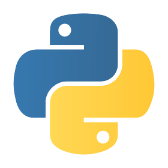
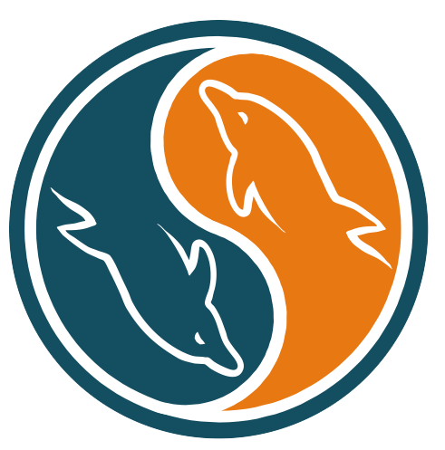

Hola, Soy Fili.Que tal, soy un estudiante de universidad al cual siempre le gusta aprender cosas nuevas, un chico con sueños y metas como cualquier persona, alguien que le apasiona sentarse frente al ordenador y pasar toda su tarde e incluso noche escribiendo código, Te doy la bienvenida a mi portafolio y que tengas un buen día.
Mark ZuckerbergCreador de Facebook y joven multimillonario, para mi una persona que trabajo duro para conseguir lo que quería, un joven con un gran sueño, una persona que por su gran dedicación y perseverancia se encuentra en donde actualmente esta.
Freddy VegaFundador de Mejorando.la y Cristalab. Una persona que es de otro mundo, es alguien que cambia las perspectiva de las cosas, creando personas totalmente diferentes de una forma divertida y emocionante, personalmente un gran maestro que me ha ayudado mucho en mi profesión.
Christian Van Der H.Co-fundador de Mejorando.la y fundador de Maestros Del Web. Aunque más serio que Freddy, Christian es una persona con actitud y confianza en si mismo, el me a dado un mensaje y es que "Puedes crear, innovar y ser todo lo que tu quieras sin importar que estudies o a que te dedicas, uno es lo que uno quiere ser".
Arturo JamaicaCo-Fundador de Brounie, profesor en Mejorando.la. Famoso por ahorrar al gobierno mexicano 115 millones de pesos con una app de iOS, al igual que yo es mexicano y por el, se que en mi país se puede emprender e innovar con grandes ideas.
Leonidas EstebanFrontend Developer, para mi un gran maestro de frontend, el cual de verdad sabe lo que hace y cual es la mejor forma de hacer código, motivándome a seguir haciendo lo que me gusta, practicando todos los días.
Uriel RodolfoOrganizador del Google Developer Group, Desarrollador de Android y ahora maestro en Mejorando.la, una persona que me ha ayudado con grandes consejos a quien admiro por lo que hace y diciendome que "cualquier sueño se puede realizar".
escomFuturo estudiante en una de las mejores escuelas de "ingeniería en sistemas" de México, mi ingreso es en Enero del 2015.
Código FacilitoAquí empezó mi interés por la programación y el mundo de la web, tomando varios de sus cursos en Youtube y comprando algunos otros cursos, que me enseñaron cosas muy interesantes y divertidas, actualmente sigo viendo sus vídeos.
merorando.laUna plataforma la cuál cambio mi vida por completo, haciendo que todo lo aburrido sea divertido, haciendo que en un mes aprendiera más de lo que aprendí en un año de bachillerato, sin duda una gran decisión de mi parte al tomar estos cursos.
InternetEl internet es como una puerta que te abre paso a un mundo en el que tu decides que ser y como quieres serlo, teniendo a la mano todo lo que quieras resolviendo tus dudas y ayudante en tus problemas, pues mucho de lo que hoy en día se pues "internet" me lo enseño, solo hay que saber buscar y en donde buscar.
HTML
Un lenguaje que domino muy bien, con el cual me gusta interactuar todos los días y me divierto haciéndolo.
CSS
Mi lenguaje favorito del lado del frontend, y con ayuda de un preprocesador (stylus) me es mucho más divertido codificar.
JScript
Un lenguaje de programación con el cuál me estoy introduciendo, me agrada bastante y que me gustaría aprender más de el.

Python
Gracias a un amigo conocí este maravilloso lenguaje, de el cual me enamore por completo, con el cual paso más tiempo haciendo código que encontrando un error.
Node.js
Prox.
Php
Prox.

MySQL
Es algo que normalmente se aprende en una universidad o en la escuela pero a mi me gusto y es una gran forma de aprender bases de datos.